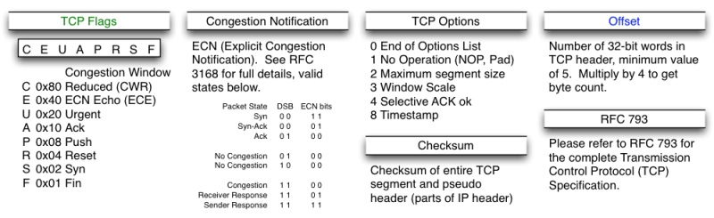
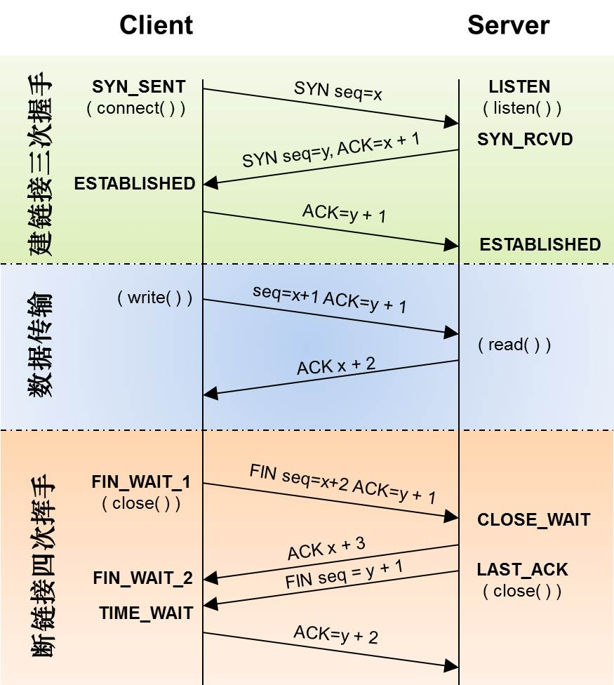
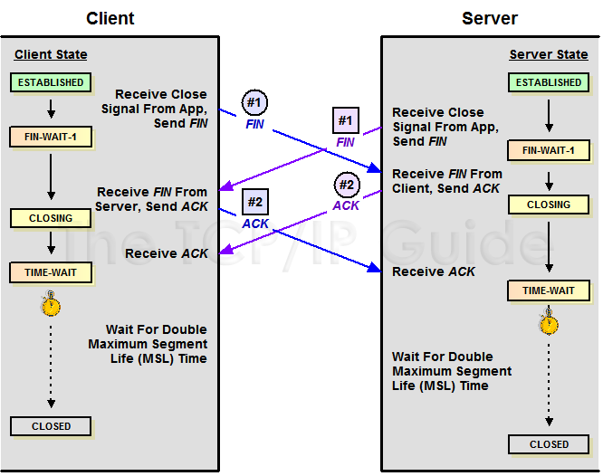
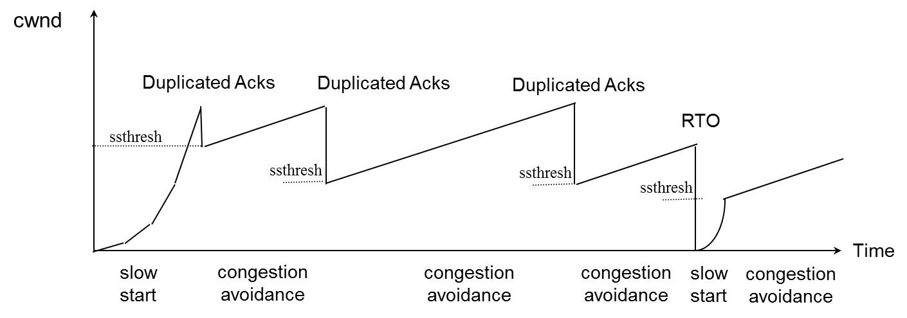
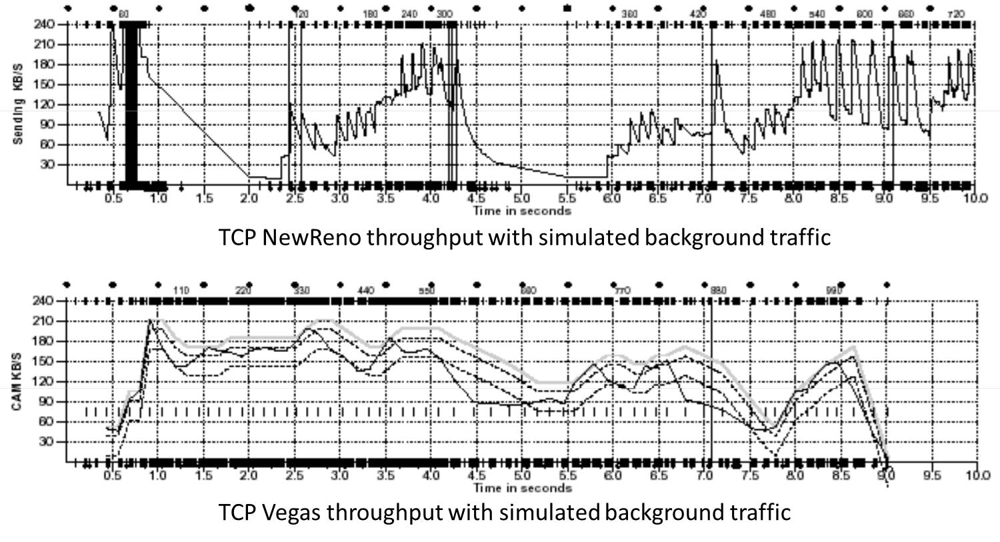

TCP是一个巨复杂的协议，因为他要解决很多问题，而这些问题又带出了很多子问题和阴暗面。所以学习TCP本身是个比较痛苦的过程，但对于学习的过程却能让人有很多收获。关于TCP这个协议的细节，我还是推荐你去看W.Richard Stevens的《TCP/IP 详解 卷1：协议》（当然，你也可以去读一下RFC793以及后面N多的RFC）。另外，本文我会使用英文术语，这样方便你通过这些英文关键词来查找相关的技术文档。
废话少说，首先，我们需要知道TCP在网络OSI的七层模型中的第四层——Transport层，IP在第三层——Network层，ARP在第二层——Data Link层，在第二层上的数据，我们叫Frame，在第三层上的数据叫Packet，第四层的数据叫Segment。
首先，我们需要知道，我们程序的数据首先会打到TCP的Segment中，然后TCP的Segment会打到IP的Packet中，然后再打到以太网Ethernet的Frame中，传到对端后，各个层解析自己的协议，然后把数据交给更高层的协议处理。
TCP头格式
我们来看一下TCP头的格式

需要注意这么几点：
- TCP的包是没有IP地址的，那是IP层上的事。但是有源端口和目标端口。
- 一个TCP连接需要四个元组来表示是同一个连接（src_ip, src_port, dst_ip, dst_port）准确说是五元组，还有一个是协议。但因为这里只是说TCP协议，所以，这里我只说四元组。
- 注意上图中的四个非常重要的东西：
- Sequence Number 是包的序号，用来解决网络包乱序（reordering）问题。
- Acknowledgement Number 就是ACK——用于确认收到，用来解决不丢包的问题。
- Window 又叫Advertised-Window，也就是著名的滑动窗口（Sliding Window），用于解决流控的。
- TCP Flag，也就是包的类型，主要是用于操控TCP的状态机的。
关于其它的东西，可以参看下面的图示

TCP的状态机
其实，网络上的传输是没有连接的，包括TCP也是一样的。而TCP所谓的“连接”，其实只不过是在通讯的双方维护一个“连接状态”，让它看上去好像有连接一样。所以，TCP的状态变换是非常重要的。
下面是：“TCP协议的状态机” 和 “TCP建链接”、“TCP断链接”、“传数据” 的对照图，我把两个图并排放在一起，这样方便在你对照着看。另外，下面这两个图非常非常的重要，你一定要记牢。（吐个槽：看到这样复杂的状态机，就知道这个协议有多复杂，复杂的东西总是有很多坑爹的事情，所以TCP协议其实也挺坑爹的）


很多人会问，为什么建链接要3次握手，断链接需要4次挥手？
- 对于建链接的3次握手，主要是要初始化Sequence Number 的初始值。通信的双方要互相通知对方自己的初始化的Sequence Number（缩写为ISN：Inital Sequence Number）——所以叫SYN，全称Synchronize Sequence Numbers。也就上图中的 x 和 y。这个号要作为以后的数据通信的序号，以保证应用层接收到的数据不会因为网络上的传输的问题而乱序（TCP会用这个序号来拼接数据）。
对于4次挥手，其实你仔细看是2次，因为TCP是全双工的，所以，发送方和接收方都需要Fin和Ack。只不过，有一方是被动的，所以看上去就成了所谓的4次挥手。如果两边同时断连接，那就会就进入到CLOSING状态，然后到达TIME_WAIT状态。下图是双方同时断连接的示意图（你同样可以对照着TCP状态机看）：

另外，有几个事情需要注意一下：
- 关于建连接时SYN超时。试想一下，如果server端接到了clien发的SYN后回了SYN-ACK后client掉线了，server端没有收到client回来的ACK，那么，这个连接处于一个中间状态，即没成功，也没失败。于是，server端如果在一定时间内没有收到的TCP会重发SYN-ACK。在Linux下，默认重试次数为5次，重试的间隔时间从1s开始每次都翻售，5次的重试时间间隔为1s, 2s, 4s, 8s, 16s，总共31s，第5次发出后还要等32s都知道第5次也超时了，所以，总共需要 1s + 2s + 4s+ 8s+ 16s + 32s = 2^6 -1 = 63s，TCP才会把断开这个连接。
- 关于SYN Flood攻击。一些恶意的人就为此制造了SYN Flood攻击——给服务器发了一个SYN后，就下线了，于是服务器需要默认等63s才会断开连接，这样，攻击者就可以把服务器的syn连接的队列耗尽，让正常的连接请求不能处理。于是，Linux下给了一个叫tcp_syncookies的参数来应对这个事——当SYN队列满了后，TCP会通过源地址端口、目标地址端口和时间戳打造出一个特别的Sequence Number发回去（又叫cookie），如果是攻击者则不会有响应，如果是正常连接，则会把这个 SYN Cookie发回来，然后服务端可以通过cookie建连接（即使你不在SYN队列中）。请注意，请先千万别用tcp_syncookies来处理正常的大负载的连接的情况。因为，synccookies是妥协版的TCP协议，并不严谨。对于正常的请求，你应该调整三个TCP参数可供你选择，第一个是：tcp_synack_retries 可以用他来减少重试次数；第二个是：tcp_max_syn_backlog，可以增大SYN连接数；第三个是：tcp_abort_on_overflow 处理不过来干脆就直接拒绝连接了。
- 关于ISN的初始化。ISN是不能hard code的，不然会出问题的——比如：如果连接建好后始终用1来做ISN，如果client发了30个segment过去，但是网络断了，于是 client重连，又用了1做ISN，但是之前连接的那些包到了，于是就被当成了新连接的包，此时，client的Sequence Number 可能是3，而Server端认为client端的这个号是30了。全乱了。RFC793中说，ISN会和一个假的时钟绑在一起，这个时钟会在每4微秒对ISN做加一操作，直到超过2^32，又从0开始。这样，一个ISN的周期大约是4.55个小时。因为，我们假设我们的TCP Segment在网络上的存活时间不会超过Maximum Segment Lifetime（缩写为MSL – Wikipedia语条），所以，只要MSL的值小于4.55小时，那么，我们就不会重用到ISN。
- 关于 MSL 和 TIME_WAIT。通过上面的ISN的描述，相信你也知道MSL是怎么来的了。我们注意到，在TCP的状态图中，从TIME_WAIT状态到CLOSED状态，有一个超时设置，这个超时设置是 2*MSL（RFC793定义了MSL为2分钟，Linux设置成了30s）为什么要这有TIME_WAIT？为什么不直接给转成CLOSED状态呢？主要有两个原因：1）TIME_WAIT确保有足够的时间让对端收到了ACK，如果被动关闭的那方没有收到Ack，就会触发被动端重发Fin，一来一去正好2个MSL，2）有足够的时间让这个连接不会跟后面的连接混在一起（你要知道，有些自做主张的路由器会缓存IP数据包，如果连接被重用了，那么这些延迟收到的包就有可能会跟新连接混在一起）。你可以看看这篇文章《TIME_WAIT and its design implications for protocols and scalable client server systems》
- 关于TIME_WAIT数量太多。从上面的描述我们可以知道，TIME_WAIT是个很重要的状态，但是如果在大并发的短链接下，TIME_WAIT 就会太多，这也会消耗很多系统资源。只要搜一下，你就会发现，十有八九的处理方式都是教你设置两个参数，一个叫tcp_tw_reuse，另一个叫tcp_tw_recycle的参数，这两个参数默认值都是被关闭的，后者recyle比前者resue更为激进，resue要温柔一些。另外，如果使用tcp_tw_reuse，必需设置tcp_timestamps=1，否则无效。这里，你一定要注意，打开这两个参数会有比较大的坑——可能会让TCP连接出一些诡异的问题（因为如上述一样，如果不等待超时重用连接的话，新的连接可能会建不上。正如官方文档上说的一样“It should not be changed without advice/request of technical experts”）。
- 关于tcp_tw_reuse。官方文档上说tcp_tw_reuse 加上tcp_timestamps（又叫PAWS, for Protection Against Wrapped Sequence Numbers）可以保证协议的角度上的安全，但是你需要tcp_timestamps在两边都被打开（你可以读一下tcp_twsk_unique的源码 ）。我个人估计还是有一些场景会有问题。
- 关于tcp_tw_recycle。如果是tcp_tw_recycle被打开了话，会假设对端开启了tcp_timestamps，然后会去比较时间戳，如果时间戳变大了，就可以重用。但是，如果对端是一个NAT网络的话（如：一个公司只用一个IP出公网）或是对端的IP被另一台重用了，这个事就复杂了。建链接的SYN可能就被直接丢掉了（你可能会看到connection time out的错误）（如果你想观摩一下Linux的内核代码，请参看源码 [tcp_timewait_state_process](http://lxr.free-electrons.com/ident?i=tcp_timewait_state_process
- 关于tcp_max_tw_buckets。这个是控制并发的TIME_WAIT的数量，默认值是180000，如果超限，那么，系统会把多的给destory掉，然后在日志里打一个警告（如：time wait bucket table overflow），官网文档说这个参数是用来对抗DDoS攻击的。也说的默认值180000并不小。这个还是需要根据实际情况考虑。
Again，使用tcp_tw_reuse和tcp_tw_recycle来解决TIME_WAIT的问题是非常非常危险的，因为这两个参数违反了TCP协议（RFC 1122）
其实，TIME_WAIT表示的是你主动断连接，所以，这就是所谓的“不作死不会死”。试想，如果让对端断连接，那么这个破问题就是对方的了，呵呵。另外，如果你的服务器是于HTTP服务器，那么设置一个HTTP的KeepAlive有多重要（浏览器会重用一个TCP连接来处理多个HTTP请求），然后让客户端去断链接（你要小心，浏览器可能会非常贪婪，他们不到万不得已不会主动断连接）。
数据传输中的Sequence Number
下图是我从Wireshark中截了个我在访问coolshell.cn时的有数据传输的图给你看一下，SeqNum是怎么变的。（使用Wireshark菜单中的Statistics ->Flow Graph… ）

你可以看到，SeqNum的增加是和传输的字节数相关的。上图中，三次握手后，来了两个Len:1440的包，而第二个包的SeqNum就成了1441。然后第一个ACK回的是1441，表示第一个1440收到了。
注意：如果你用Wireshark抓包程序看3次握手，你会发现SeqNum总是为0，不是这样的，Wireshark为了显示更友好，使用了Relative SeqNum——相对序号，你只要在右键菜单中的protocol preference 中取消掉就可以看到“Absolute SeqNum”了
TCP重传机制
TCP要保证所有的数据包都可以到达，所以，必需要有重传机制。
注意，接收端给发送端的Ack确认只会确认最后一个连续的包，比如，发送端发了1,2,3,4,5一共五份数据，接收端收到了1，2，于是回ack 3，然后收到了4（注意此时3没收到），此时的TCP会怎么办？我们要知道，因为正如前面所说的，SeqNum和Ack是以字节数为单位，所以ack的时候，不能跳着确认，只能确认最大的连续收到的包，不然，发送端就以为之前的都收到了。
超时重传机制
一种是不回ack，死等3，当发送方发现收不到3的ack超时后，会重传3。一旦接收方收到3后，会ack 回 4——意味着3和4都收到了。
但是，这种方式会有比较严重的问题，那就是因为要死等3，所以会导致4和5即便已经收到了，而发送方也完全不知道发生了什么事，因为没有收到Ack，所以，发送方可能会悲观地认为也丢了，所以有可能也会导致4和5的重传。
对此有两种选择：
- 一种是仅重传timeout的包。也就是第3份数据。
- 另一种是重传timeout后所有的数据，也就是第3，4，5这三份数据。
这两种方式有好也有不好。第一种会节省带宽，但是慢，第二种会快一点，但是会浪费带宽，也可能会有无用功。但总体来说都不好。因为都在等timeout，timeout可能会很长（在下篇会说TCP是怎么动态地计算出timeout的）
快速重传机制
于是，TCP引入了一种叫Fast Retransmit 的算法，不以时间驱动，而以数据驱动重传。也就是说，如果，包没有连续到达，就ack最后那个可能被丢了的包，如果发送方连续收到3次相同的ack，就重传。Fast Retransmit的好处是不用等timeout了再重传。
比如：如果发送方发出了1，2，3，4，5份数据，第一份先到送了，于是就ack回2，结果2因为某些原因没收到，3到达了，于是还是ack回2，后面的4和5都到了，但是还是ack回2，因为2还是没有收到，于是发送端收到了三个ack=2的确认，知道了2还没有到，于是就马上重转2。然后，接收端收到了2，此时因为3，4，5都收到了，于是ack回6。示意图如下：

Fast Retransmit只解决了一个问题，就是timeout的问题，它依然面临一个艰难的选择，就是，是重传之前的一个还是重传所有的问题。对于上面的示例来说，是重传#2呢还是重传#2，#3，#4，#5呢？因为发送端并不清楚这连续的3个ack(2)是谁传回来的？也许发送端发了20份数据，是#6，#10，#20传来的呢。这样，发送端很有可能要重传从2到20的这堆数据（这就是某些TCP的实际的实现）。可见，这是一把双刃剑。
SACK 方法
另外一种更好的方式叫：Selective Acknowledgment (SACK)（参看RFC 2018），这种方式需要在TCP头里加一个SACK的东西，ACK还是Fast Retransmit的ACK，SACK则是汇报收到的数据碎版。参看下图：
这样，在发送端就可以根据回传的SACK来知道哪些数据到了，哪些没有到。于是就优化了Fast Retransmit的算法。当然，这个协议需要两边都支持。在 Linux下，可以通过tcp_sack参数打开这个功能（Linux 2.4后默认打开）。
这里还需要注意一个问题——接收方Reneging，所谓Reneging的意思就是接收方有权把已经报给发送端SACK里的数据给丢了。这样干是不被鼓励的，因为这个事会把问题复杂化了，但是，接收方这么做可能会有些极端情况，比如要把内存给别的更重要的东西。所以，发送方也不能完全依赖SACK，还是要依赖ACK，并维护Time-Out，如果后续的ACK没有增长，那么还是要把SACK的东西重传，另外，接收端这边永远不能把SACK的包标记为Ack。
注意：SACK会消费发送方的资源，试想，如果一个攻击者给数据发送方发一堆SACK的选项，这会导致发送方开始要重传甚至遍历已经发出的数据，这会消耗很多发送端的资源。详细的东西请参看《TCP SACK的性能权衡》
Duplicate SACK – 重复收到数据的问题
Duplicate SACK又称D-SACK，其主要使用了SACK来告诉发送方有哪些数据被重复接收了。RFC-2883 里有详细描述和示例。下面举几个例子（来源于RFC-2883）
D-SACK使用了SACK的第一个段来做标志，
- 如果SACK的第一个段的范围被ACK所覆盖，那么就是D-SACK
- 如果SACK的第一个段的范围被SACK的第二个段覆盖，那么就是D-SACK
示例一：ACK丢包
下面的示例中，丢了两个ACK，所以，发送端重传了第一个数据包（3000-3499），于是接收端发现重复收到，于是回了一个SACK=3000-3500，因为ACK都到了4000意味着收到了4000之前的所有数据，所以这个SACK就是D-SACK——旨在告诉发送端我收到了重复的数据，而且我们的发送端还知道，数据包没有丢，丢的是ACK包。
|
|
示例二，网络延误
下面的示例中，网络包（1000-1499）被网络给延误了，导致发送方没有收到ACK，而后面到达的三个包触发了“Fast Retransmit算法”，所以重传，但重传时，被延误的包又到了，所以，回了一个SACK=1000-1500，因为ACK已到了3000，所以，这个SACK是D-SACK——标识收到了重复的包。
这个案例下，发送端知道之前因为“Fast Retransmit算法”触发的重传不是因为发出去的包丢了，也不是因为回应的ACK包丢了，而是因为网络延时了。
|
|
可见，引入了D-SACK，有这么几个好处：
- 可以让发送方知道，是发出去的包丢了，还是回来的ACK包丢了。
- 是不是自己的timeout太小了，导致重传。
- 网络上出现了先发的包后到的情况（又称reordering）
- 网络上是不是把我的数据包给复制了。
知道这些东西可以很好得帮助TCP了解网络情况，从而可以更好的做网络上的流控。
Linux下的tcp_dsack参数用于开启这个功能（Linux 2.4后默认打开）
TCP的RTT算法
从前面的TCP重传机制我们知道Timeout的设置对于重传非常重要。
- 设长了，重发就慢，丢了老半天才重发，没有效率，性能差；
- 设短了，会导致可能并没有丢就重发。于是重发的就快，会增加网络拥塞，导致更多的超时，更多的超时导致更多的重发。
而且，这个超时时间在不同的网络的情况下，根本没有办法设置一个死的值。只能动态地设置。 为了动态地设置，TCP引入了RTT——Round Trip Time，也就是一个数据包从发出去到回来的时间。这样发送端就大约知道需要多少的时间，从而可以方便地设置Timeout——RTO（Retransmission TimeOut），以让我们的重传机制更高效。 听起来似乎很简单，好像就是在发送端发包时记下t0，然后接收端再把这个ack回来时再记一个t1，于是RTT = t1 – t0。没那么简单，这只是一个采样，不能代表普遍情况。
经典算法
RFC793 中定义的经典算法是这样的：
- 首先，先采样RTT，记下最近好几次的RTT值。
- 然后做平滑计算SRTT（ Smoothed RTT）。公式为：（其中的 α 取值在0.8 到 0.9之间，这个算法英文叫Exponential weighted moving average，中文叫：加权移动平均）
SRTT = ( α SRTT ) + ((1- α) RTT) - 开始计算RTO。公式如下：
RTO = min [ UBOUND, max [ LBOUND, (β * SRTT) ] ]
其中：
- UBOUND是最大的timeout时间，上限值
- LBOUND是最小的timeout时间，下限值
- β 值一般在1.3到2.0之间。
Karn / Partridge 算法
但是上面的这个算法在重传的时候会出有一个终极问题——你是用第一次发数据的时间和ack回来的时间做RTT样本值，还是用重传的时间和ACK回来的时间做RTT样本值？
这个问题无论你选那头都是按下葫芦起了瓢。 如下图所示：
- 情况（a）是ack没回来，所以重传。如果你计算第一次发送和ACK的时间，那么，明显算大了。
情况（b）是ack回来慢了，但是导致了重传，但刚重传不一会儿，之前ACK就回来了。如果你是算重传的时间和ACK回来的时间的差，就会算短了。

所以1987年的时候，搞了一个叫Karn / Partridge Algorithm，这个算法的最大特点是——忽略重传，不把重传的RTT做采样（你看，你不需要去解决不存在的问题）。
但是，这样一来，又会引发一个大BUG——如果在某一时间，网络闪动，突然变慢了，产生了比较大的延时，这个延时导致要重转所有的包（因为之前的RTO很小），于是，因为重转的不算，所以，RTO就不会被更新，这是一个灾难。 于是Karn算法用了一个取巧的方式——只要一发生重传，就对现有的RTO值翻倍（这就是所谓的 Exponential backoff），很明显，这种死规矩对于一个需要估计比较准确的RTT也不靠谱。
Jacobson / Karels 算法
前面两种算法用的都是“加权移动平均”，这种方法最大的毛病就是如果RTT有一个大的波动的话，很难被发现，因为被平滑掉了。所以，1988年，又有人推出来了一个新的算法，这个算法叫Jacobson / Karels Algorithm（参看RFC6289）。这个算法引入了最新的RTT的采样和平滑过的SRTT的差距做因子来计算。 公式如下：（其中的DevRTT是Deviation RTT的意思）
SRTT = SRTT + α (RTT – SRTT) —— 计算平滑RTT
DevRTT = (1-β)*DevRTT + β*(|RTT-SRTT|) ——计算平滑RTT和真实的差距（加权移动平均）
RTO= µ * SRTT + ∂ *DevRTT —— 神一样的公式
（其中：在Linux下，α = 0.125，β = 0.25， μ = 1，∂ = 4 ——这就是算法中的“调得一手好参数”，nobody knows why, it just works…） 最后的这个算法在被用在今天的TCP协议中（Linux的源代码在：tcp_rtt_estimator）。
TCP滑动窗口
需要说明一下，如果你不了解TCP的滑动窗口这个事，你等于不了解TCP协议。我们都知道，TCP必需要解决的可靠传输以及包乱序（reordering）的问题，所以，TCP必需要知道网络实际的数据处理带宽或是数据处理速度，这样才不会引起网络拥塞，导致丢包。
所以，TCP引入了一些技术和设计来做网络流控，Sliding Window是其中一个技术。 前面我们说过，TCP头里有一个字段叫Window，又叫Advertised-Window，这个字段是接收端告诉发送端自己还有多少缓冲区可以接收数据。于是发送端就可以根据这个接收端的处理能力来发送数据，而不会导致接收端处理不过来。 为了说明滑动窗口，我们需要先看一下TCP缓冲区的一些数据结构：

上图中，我们可以看到：
- 接收端LastByteRead指向了TCP缓冲区中读到的位置，NextByteExpected指向的地方是收到的连续包的最后一个位置，LastByteRcved指向的是收到的包的最后一个位置，我们可以看到中间有些数据还没有到达，所以有数据空白区。
- 发送端的LastByteAcked指向了被接收端Ack过的位置（表示成功发送确认），LastByteSent表示发出去了，但还没有收到成功确认的Ack，LastByteWritten指向的是上层应用正在写的地方。
于是：
- 接收端在给发送端回ACK中会汇报自己的AdvertisedWindow = MaxRcvBuffer – LastByteRcvd – 1;
- 而发送方会根据这个窗口来控制发送数据的大小，以保证接收方可以处理。
下面我们来看一下发送方的滑动窗口示意图：

上图中分成了四个部分，分别是：（其中那个黑模型就是滑动窗口）
- #1已收到ack确认的数据。
- #2发还没收到ack的。
- #3在窗口中还没有发出的（接收方还有空间）。
- #4窗口以外的数据（接收方没空间）
下面是个滑动后的示意图（收到36的ack，并发出了46-51的字节）：

下面我们来看一个接受端控制发送端的图示：

Zero Window
上图，我们可以看到一个处理缓慢的Server（接收端）是怎么把Client（发送端）的TCP Sliding Window给降成0的。此时，你一定会问，如果Window变成0了，TCP会怎么样？是不是发送端就不发数据了？是的，发送端就不发数据了，你可以想像成“Window Closed”，那你一定还会问，如果发送端不发数据了，接收方一会儿Window size 可用了，怎么通知发送端呢？
解决这个问题，TCP使用了Zero Window Probe技术，缩写为ZWP，也就是说，发送端在窗口变成0后，会发ZWP的包给接收方，让接收方来ack他的Window尺寸，一般这个值会设置成3次，第次大约30-60秒（不同的实现可能会不一样）。如果3次过后还是0的话，有的TCP实现就会发RST把链接断了。
注意：只要有等待的地方都可能出现DDoS攻击，Zero Window也不例外，一些攻击者会在和HTTP建好链发完GET请求后，就把Window设置为0，然后服务端就只能等待进行ZWP，于是攻击者会并发大量的这样的请求，把服务器端的资源耗尽。（关于这方面的攻击，大家可以移步看一下Wikipedia的SockStress词条）
另外，Wireshark中，你可以使用tcp.analysis.zero_window来过滤包，然后使用右键菜单里的follow TCP stream，你可以看到ZeroWindowProbe及ZeroWindowProbeAck的包。
Silly Window Syndrome
Silly Window Syndrome翻译成中文就是“糊涂窗口综合症”。正如你上面看到的一样，如果我们的接收方太忙了，来不及取走Receive Windows里的数据，那么，就会导致发送方越来越小。到最后，如果接收方腾出几个字节并告诉发送方现在有几个字节的window，而我们的发送方会义无反顾地发送这几个字节。
要知道，我们的TCP+IP头有40个字节，为了几个字节，要达上这么大的开销，这太不经济了。
另外，你需要知道网络上有个MTU，对于以太网来说，MTU是1500字节，除去TCP+IP头的40个字节，真正的数据传输可以有1460，这就是所谓的MSS（Max Segment Size）注意，TCP的RFC定义这个MSS的默认值是536，这是因为 RFC 791里说了任何一个IP设备都得最少接收576尺寸的大小（实际上来说576是拨号的网络的MTU，而576减去IP头的20个字节就是536）。
如果你的网络包可以塞满MTU，那么你可以用满整个带宽，如果不能，那么你就会浪费带宽。（大于MTU的包有两种结局，一种是直接被丢了，另一种是会被重新分块打包发送） 你可以想像成一个MTU就相当于一个飞机的最多可以装的人，如果这飞机里满载的话，带宽最高，如果一个飞机只运一个人的话，无疑成本增加了，也而相当二。
所以，Silly Windows Syndrome这个现像就像是你本来可以坐200人的飞机里只做了一两个人。 要解决这个问题也不难，就是避免对小的window size做出响应，直到有足够大的window size再响应，这个思路可以同时实现在sender和receiver两端。
- 如果这个问题是由Receiver端引起的，那么就会使用 David D Clark’s 方案。在receiver端，如果收到的数据导致window size小于某个值，可以直接ack(0)回sender，这样就把window给关闭了，也阻止了sender再发数据过来，等到receiver端处理了一些数据后windows size 大于等于了MSS，或者，receiver buffer有一半为空，就可以把window打开让send 发送数据过来。
- 如果这个问题是由Sender端引起的，那么就会使用著名的 Nagle’s algorithm。这个算法的思路也是延时处理，他有两个主要的条件：
- 要等到 Window Size>=MSS 或是 Data Size >=MSS，
- 收到之前发送数据的ack回包，他才会发数据，否则就是在攒数据。
另外，Nagle算法默认是打开的，所以，对于一些需要小包场景的程序——比如像telnet或ssh这样的交互性比较强的程序，你需要关闭这个算法。你可以在Socket设置TCP_NODELAY选项来关闭这个算法（关闭Nagle算法没有全局参数，需要根据每个应用自己的特点来关闭）
|
|
另外，网上有些文章说TCP_CORK的socket option是也关闭Nagle算法，这不对。TCP_CORK其实是更新激进的Nagle算汉，完全禁止小包发送，而Nagle算法没有禁止小包发送，只是禁止了大量的小包发送。最好不要两个选项都设置。
TCP的拥塞处理 – Congestion Handling
上面我们知道了，TCP通过Sliding Window来做流控（Flow Control），但是TCP觉得这还不够，因为Sliding Window需要依赖于连接的发送端和接收端，其并不知道网络中间发生了什么。TCP的设计者觉得，一个伟大而牛逼的协议仅仅做到流控并不够，因为流控只是网络模型4层以上的事，TCP的还应该更聪明地知道整个网络上的事。
具体一点，我们知道TCP通过一个timer采样了RTT并计算RTO，但是，如果网络上的延时突然增加，那么，TCP对这个事做出的应对只有重传数据，但是，重传会导致网络的负担更重，于是会导致更大的延迟以及更多的丢包，于是，这个情况就会进入恶性循环被不断地放大。试想一下，如果一个网络内有成千上万的TCP连接都这么行事，那么马上就会形成“网络风暴”，TCP这个协议就会拖垮整个网络。这是一个灾难。
所以，TCP不能忽略网络上发生的事情，而无脑地一个劲地重发数据，对网络造成更大的伤害。对此TCP的设计理念是：TCP不是一个自私的协议，当拥塞发生的时候，要做自我牺牲。就像交通阻塞一样，每个车都应该把路让出来，而不要再去抢路了。
关于拥塞控制的论文请参看《Congestion Avoidance and Control》(PDF)
拥塞控制主要是四个算法：1）慢启动，2）拥塞避免，3）拥塞发生，4）快速恢复。
慢热启动算法 – Slow Start
首先，我们来看一下TCP的慢热启动。慢启动的意思是，刚刚加入网络的连接，一点一点地提速，不要一上来就像那些特权车一样霸道地把路占满。新同学上高速还是要慢一点，不要把已经在高速上的秩序给搞乱了。
慢启动的算法如下(cwnd全称Congestion Window)：
- 连接建好的开始先初始化cwnd = 1，表明可以传一个MSS大小的数据。
- 每当收到一个ACK，cwnd++; 呈线性上升
- 每当过了一个RTT，cwnd = cwnd*2; 呈指数让升
- 还有一个ssthresh（slow start threshold），是一个上限，当cwnd >= ssthresh时，就会进入“拥塞避免算法”（后面会说这个算法）
所以，我们可以看到，如果网速很快的话，ACK也会返回得快，RTT也会短，那么，这个慢启动就一点也不慢。下图说明了这个过程。

这里，我需要提一下的是一篇Google的论文《An Argument for Increasing TCP’s Initial Congestion Window》Linux 3.0后采用了这篇论文的建议——把cwnd 初始化成了 10个MSS。 而Linux 3.0以前，比如2.6，Linux采用了RFC3390，cwnd是跟MSS的值来变的，如果MSS< 1095，则cwnd = 4；如果MSS>2190，则cwnd=2；其它情况下，则是3。
拥塞避免算法 – Congestion Avoidance
前面说过，还有一个ssthresh（slow start threshold），是一个上限，当cwnd >= ssthresh时，就会进入“拥塞避免算法”。一般来说ssthresh的值是65535，单位是字节，当cwnd达到这个值时后，算法如下：
- 收到一个ACK时，cwnd = cwnd + 1/cwnd
- 当每过一个RTT时，cwnd = cwnd + 1
这样就可以避免增长过快导致网络拥塞，慢慢的增加调整到网络的最佳值。很明显，是一个线性上升的算法。
拥塞状态时的算法
前面我们说过，当丢包的时候，会有两种情况：
等到RTO超时，重传数据包。TCP认为这种情况太糟糕，反应也很强烈。
- sshthresh = cwnd /2
- cwnd 重置为 1
- 进入慢启动过程
Fast Retransmit算法，也就是在收到3个duplicate ACK时就开启重传，而不用等到RTO超时。
- TCP Tahoe的实现和RTO超时一样。
- TCP Reno的实现是：
- cwnd = cwnd /2
- sshthresh = cwnd
- 进入快速恢复算法——Fast Recovery
上面我们可以看到RTO超时后，sshthresh会变成cwnd的一半，这意味着，如果cwnd<=sshthresh时出现的丢包，那么TCP的sshthresh就会减了一半，然后等cwnd又很快地以指数级增涨爬到这个地方时，就会成慢慢的线性增涨。我们可以看到，TCP是怎么通过这种强烈地震荡快速而小心得找到网站流量的平衡点的。
快速恢复算法 – Fast Recovery
TCP Reno
这个算法定义在RFC5681。快速重传和快速恢复算法一般同时使用。快速恢复算法是认为，你还有3个Duplicated Acks说明网络也不那么糟糕，所以没有必要像RTO超时那么强烈。 注意，正如前面所说，进入Fast Recovery之前，cwnd 和 sshthresh已被更新：
- cwnd = cwnd /2
- sshthresh = cwnd
然后，真正的Fast Recovery算法如下：
- cwnd = sshthresh + 3 * MSS （3的意思是确认有3个数据包被收到了）
- 重传Duplicated ACKs指定的数据包
- 如果再收到 duplicated Acks，那么cwnd = cwnd +1
- 如果收到了新的Ack，那么，cwnd = sshthresh ，然后就进入了拥塞避免的算法了。
如果你仔细思考一下上面的这个算法，你就会知道，上面这个算法也有问题，那就是——它依赖于3个重复的Acks。注意，3个重复的Acks并不代表只丢了一个数据包，很有可能是丢了好多包。但这个算法只会重传一个，而剩下的那些包只能等到RTO超时，于是，进入了恶梦模式——超时一个窗口就减半一下，多个超时会超成TCP的传输速度呈级数下降，而且也不会触发Fast Recovery算法了。
通常来说，正如我们前面所说的，SACK或D-SACK的方法可以让Fast Recovery或Sender在做决定时更聪明一些，但是并不是所有的TCP的实现都支持SACK（SACK需要两端都支持），所以，需要一个没有SACK的解决方案。而通过SACK进行拥塞控制的算法是FACK（后面会讲）
TCP New Reno
于是，1995年，TCP New Reno（参见 RFC 6582 ）算法提出来，主要就是在没有SACK的支持下改进Fast Recovery算法的——
- 当sender这边收到了3个Duplicated Acks，进入Fast Retransimit模式，开发重传重复Acks指示的那个包。如果只有这一个包丢了，那么，重传这个包后回来的Ack会把整个已经被sender传输出去的数据ack回来。如果没有的话，说明有多个包丢了。我们叫这个ACK为Partial ACK。
- 一旦Sender这边发现了Partial ACK出现，那么，sender就可以推理出来有多个包被丢了，于是乎继续重传sliding window里未被ack的第一个包。直到再也收不到了Partial Ack，才真正结束Fast Recovery这个过程
我们可以看到，这个“Fast Recovery的变更”是一个非常激进的玩法，他同时延长了Fast Retransmit和Fast Recovery的过程。
算法示意图

FACK算法
FACK全称Forward Acknowledgment 算法，论文地址在这里（PDF）Forward Acknowledgement: Refining TCP Congestion Control 这个算法是其于SACK的，前面我们说过SACK是使用了TCP扩展字段Ack了有哪些数据收到，哪些数据没有收到，他比Fast Retransmit的3 个duplicated acks好处在于，前者只知道有包丢了，不知道是一个还是多个，而SACK可以准确的知道有哪些包丢了。 所以，SACK可以让发送端这边在重传过程中，把那些丢掉的包重传，而不是一个一个的传，但这样的一来，如果重传的包数据比较多的话，又会导致本来就很忙的网络就更忙了。所以，FACK用来做重传过程中的拥塞流控。
- 这个算法会把SACK中最大的Sequence Number 保存在snd.fack这个变量中，snd.fack的更新由ack带秋，如果网络一切安好则和snd.una一样（snd.una就是还没有收到ack的地方，也就是前面sliding window里的category #2的第一个地方）
- 然后定义一个awnd = snd.nxt – snd.fack（snd.nxt指向发送端sliding window中正在要被发送的地方——前面sliding windows图示的category#3第一个位置），这样awnd的意思就是在网络上的数据。（所谓awnd意为：actual quantity of data outstanding in the network）
- 如果需要重传数据，那么，awnd = snd.nxt – snd.fack + retran_data，也就是说，awnd是传出去的数据 + 重传的数据。
- 然后触发Fast Recovery 的条件是： ( ( snd.fack – snd.una ) > (3*MSS) ) || (dupacks == 3) ) 。这样一来，就不需要等到3个duplicated acks才重传，而是只要sack中的最大的一个数据和ack的数据比较长了（3个MSS），那就触发重传。在整个重传过程中cwnd不变。直到当第一次丢包的snd.nxt<=snd.una（也就是重传的数据都被确认了），然后进来拥塞避免机制——cwnd线性上涨。
我们可以看到如果没有FACK在，那么在丢包比较多的情况下，原来保守的算法会低估了需要使用的window的大小，而需要几个RTT的时间才会完成恢复，而FACK会比较激进地来干这事。 但是，FACK如果在一个网络包会被 reordering的网络里会有很大的问题。
其它拥塞控制算法简介
TCP Vegas 拥塞控制算法
这个算法1994年被提出，它主要对TCP Reno 做了些修改。这个算法通过对RTT的非常重的监控来计算一个基准RTT。然后通过这个基准RTT来估计当前的网络实际带宽，如果实际带宽比我们的期望的带宽要小或是要多的活，那么就开始线性地减少或增加cwnd的大小。如果这个计算出来的RTT大于了Timeout后，那么，不等ack超时就直接重传。（Vegas 的核心思想是用RTT的值来影响拥塞窗口，而不是通过丢包） 这个算法的论文是《TCP Vegas: End to End Congestion Avoidance on a Global Internet》这篇论文给了Vegas和 New Reno的对比：

关于这个算法实现，你可以参看Linux源码：/net/ipv4/tcp_vegas.h， /net/ipv4/tcp_vegas.c
HSTCP(High Speed TCP) 算法
这个算法来自RFC 3649（Wikipedia词条）。其对最基础的算法进行了更改，他使得Congestion Window涨得快，减得慢。其中：
- 拥塞避免时的窗口增长方式： cwnd = cwnd + α(cwnd) / cwnd
- 丢包后窗口下降方式：cwnd = (1- β(cwnd))*cwnd
注：α(cwnd)和β(cwnd)都是函数，如果你要让他们和标准的TCP一样，那么让α(cwnd)=1，β(cwnd)=0.5就可以了。 对于α(cwnd)和β(cwnd)的值是个动态的变换的东西。 关于这个算法的实现，你可以参看Linux源码：/net/ipv4/tcp_highspeed.c
TCP BIC 算法
2004年，产内出BIC算法。现在你还可以查得到相关的新闻《Google：美科学家研发BIC-TCP协议 速度是DSL六千倍》 BIC全称Binary Increase Congestion control，在Linux 2.6.8中是默认拥塞控制算法。BIC的发明者发这么多的拥塞控制算法都在努力找一个合适的cwnd – Congestion Window，而且BIC-TCP的提出者们看穿了事情的本质，其实这就是一个搜索的过程，所以BIC这个算法主要用的是Binary Search——二分查找来干这个事。 关于这个算法实现，你可以参看Linux源码：/net/ipv4/tcp_bic.c
TCP WestWood算法
westwood采用和Reno相同的慢启动算法、拥塞避免算法。westwood的主要改进方面：在发送端做带宽估计，当探测到丢包时，根据带宽值来设置拥塞窗口、慢启动阈值。 那么，这个算法是怎么测量带宽的？每个RTT时间，会测量一次带宽，测量带宽的公式很简单，就是这段RTT内成功被ack了多少字节。因为，这个带宽和用RTT计算RTO一样，也是需要从每个样本来平滑到一个值的——也是用一个加权移平均的公式。 另外，我们知道，如果一个网络的带宽是每秒可以发送X个字节，而RTT是一个数据发出去后确认需要的时候，所以，X RTT应该是我们缓冲区大小。所以，在这个算法中，ssthresh的值就是est_BD min-RTT(最小的RTT值)，如果丢包是Duplicated ACKs引起的，那么如果cwnd > ssthresh，则 cwin = ssthresh。如果是RTO引起的，cwnd = 1，进入慢启动。 关于这个算法实现，你可以参看Linux源码： /net/ipv4/tcp_westwood.c
其它
更多的算法，你可以从Wikipedia的 TCP Congestion Avoidance Algorithm 词条中找到相关的线索